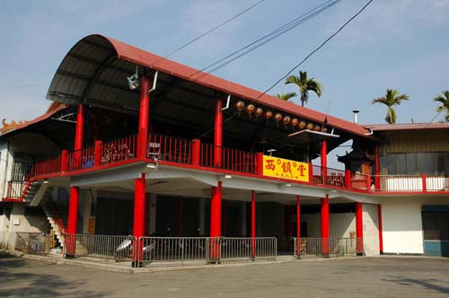
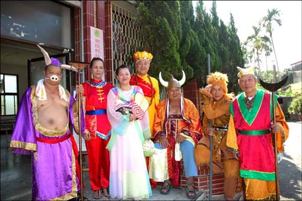

西鎮堂
在廣興紙寮後方的里活動中心二樓，有一間主祀齊天大聖爺孫悟空的廟宇，名為「西鎮堂」。
西鎮堂為鐵山社區最重要的地方廟，其所供奉的主神為齊天大聖，當地人皆稱為「大聖君」。  原為崁頂劉姓人家所私奉的神壇，最早的神像是從「解化堂」（即醒靈寺前身）請來的，因乩童為人作法靈驗而興旺起來。
至民國六十三年遷至現址，反而略呈沒落，關於其興盛與沒落之原因與「黑狗精」的傳說有密關係。廟內的門板及牆上有精緻的書畫彩繪，值得前往一觀。
黑狗精傳奇：光復之初，地方常有人生不明原因的病或行為異常，西鎮堂乩童說是黑狗精作祟，黑狗精附身在庄民潘平井身上。大聖君藉乩童之口表示要請天兵天將 來捉拿。俟黑狗精出現，代表天兵神將的庄內年輕人窮追不捨，將之收伏。自此庄中逐漸平靜。
後來被黑狗精附身的潘平井的兒子當了大聖君的乩童，卻不怎麼靈，連帶也影響到西鎮堂的香火。